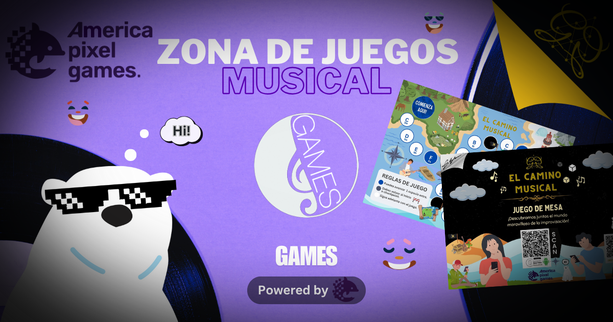

Games Zone powered by Catarsis Musical.
Bienvenido
Un espacio lúdico y educativo diseñado para facilitar la comprensión de la teoría musical de forma divertida y accesible. En esta zona, cada juego es una herramienta de aprendizaje que fomenta una comprensión más profunda de la teoría musical.
Nuestro primer juego, "El Camino Musical", aborda los grados musicales, permitiendo a los usuarios aprender y explorar la base esencial y fundamental de manera interactiva y para toda la familia.
